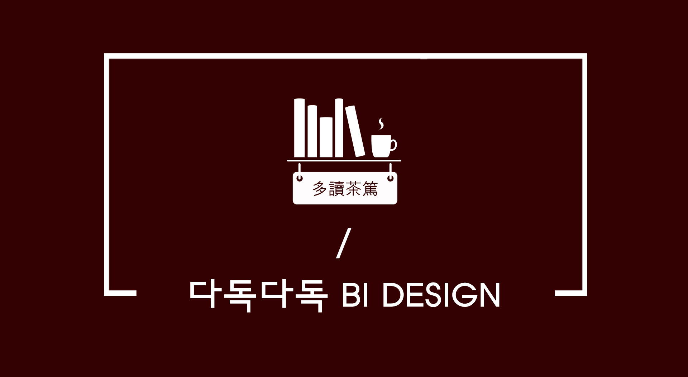

다독다독 BI 디자인
CIBI

북카페 다독다독은 강동구립 북카페도서관으로 도서관과 카페가 결합한 북카페 형태의 공공시설입니다.
소규모 지역밀착형 복합문화공간 형태의 도서관으로써 서로 소통하고 마음 편히 머물수 있는‘사람과 사람이 만나 소통하는 편안한 공간’을 추구합니다.
이러한 뜻을 담은 북카페 다독다독의 심볼은 하나의 책장과 여러 사람들이 읽을 책들, 그리고 심신의 안정을 도와줄 커피를 형상화시켜 직관적으로 파악이 가능합니다.
로고타입은 도서관의 단정함을 보여주는 한양나무체를 사용하여 카페하면 떠오르는 간판과 함께 조합하여 디자인하였습니다.
색 또한 커피열매를 모티브로 자연적이고 알록달록한 색깔을 따왔습니다. 부드럽고 따듯한 색들은 다양한 사람들이 모이는 북카페도서관에 어울리는 차분하면서도 활기찬 느낌을 받을 수 있을 것입니다.

Recommended For You
APP
Project 5
habitify앱 리디자인
CIBI
Project 6